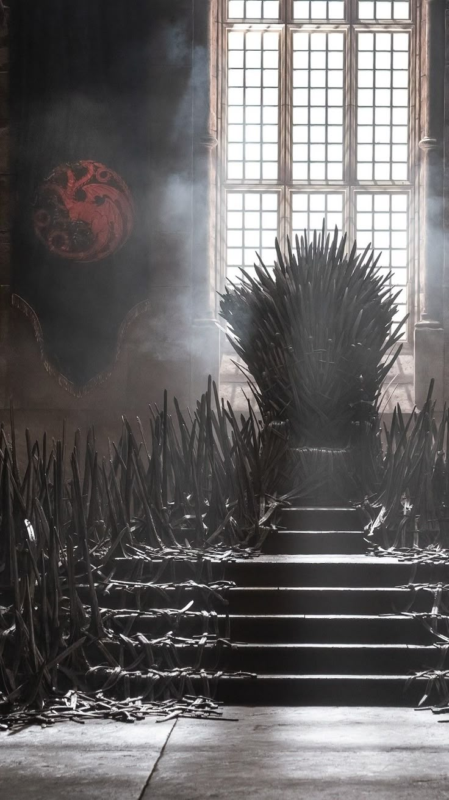
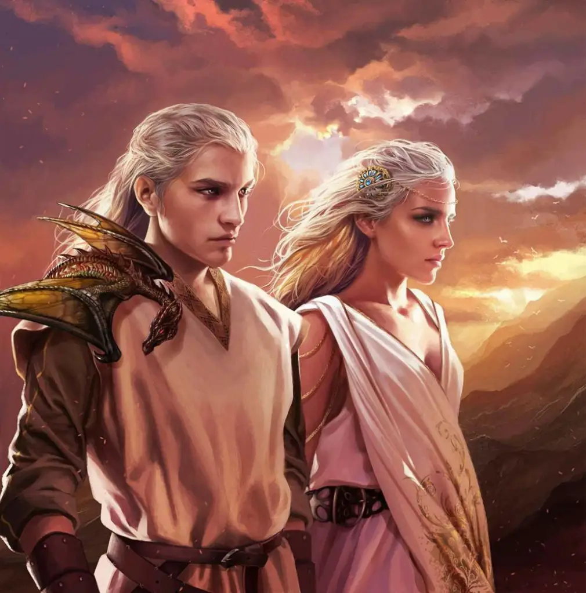

A Casa Targaryen é uma dinastia de reis e rainhas nobres com traços marcantes, como cabelos loiro-platinados e
olhos violetas, famosa por governar o continente de Westeros por quase trezentos anos.
Eles vieram de um império antigo e mágico chamado Valíria, trazendo consigo o segredo de como domar e voar em
dragões gigantescos e cuspidores de fogo.
Usando essas criaturas como armas de guerra imbatíveis, os Targaryen unificaram reinos rivais e criaram o Trono
de Ferro, mantendo-se no poder através de uma conexão mística com o fogo, até que uma mistura de loucura
familiar e rebeliões causou a sua queda.
Toda essa identidade está resumida em seu famoso símbolo: um dragão de três cabeças vermelho em um fundo preto,
onde cada cabeça representa os três conquistadores originais (Aegon e suas duas irmãs, Visenya e Rhaenys) que
transformaram o continente para sempre.
Para reforçar sua soberania, eles adotaram o lema "Fogo e Sangue", uma promessa direta de que o poder de
sua dinastia vinha do sangue mágico que corria em suas veias e do fogo devastador de seus dragões, capaz de
reduzir a cinzas qualquer um que ousasse desafiar o trono.

.jpg)

proxima pagina Voltar ao Menu